快来康康RM人的双十一购物车！
今年你领红包了吗？
你攒喵币了吗？
你天天开彩蛋了吗？
听说你还在到处找人砍一刀？
聪明人已经在求人进行淘宝人气助力了。
大家都在说双十一变味了，组队玩法越来越复杂，其实小编觉得双十一还是那个双十一，只是它在用自己的方式帮助你在光棍节脱单。（什么？你不会忘记双十一是光棍节吧！）
在Ambition战队这个单身脱单比例
和学校男女比例一样惊人的地方
我们都非常好奇RM人的购物车是什么样子的？
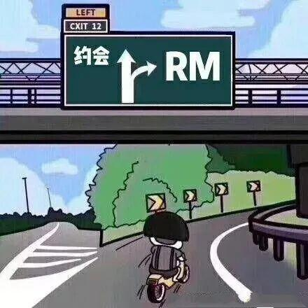
在同学眼里，RM人的购物车可能有格子衫、牛仔裤和生发液，只有他们自己知道，惨淡的人生里（不是）还有螺丝和电路板。
让他们双十一疯狂下单的到底是什么呢？
小编将机械、电控还有运营组的购物车扒了个精光
让我们来一探究竟！
机械的淘宝购物车
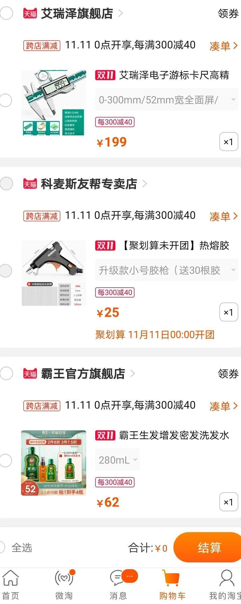
——  解读——
解读——
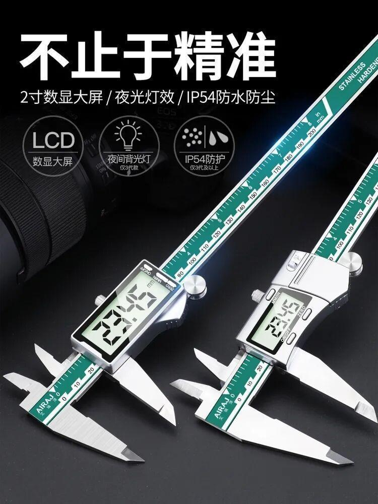
游标卡尺
机器失控是常态，作为一名成熟的机械人，会冷静掏出游标卡尺量一量:“尺寸没错， 这个锅谁都别想给机械背”。
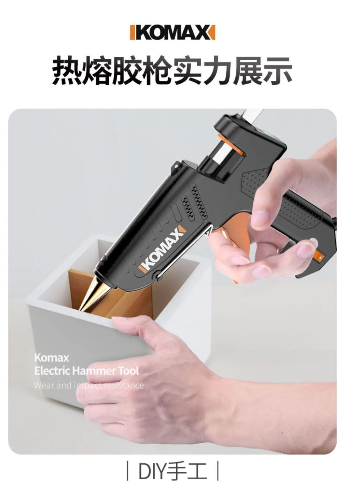
热熔胶枪
螺丝松了，粘住它的腿，电控的来了，粘住他的嘴，给我一把热熔胶枪，机械人可以粘住全世界。
防脱洗发水
被要求3天设计+建模+焊出一台机器人时，总能感到头顶有清风拂过。这时要赶紧掏出霸王防脱，毕竟还没攒够植发的钱。
电控的淘宝购物车
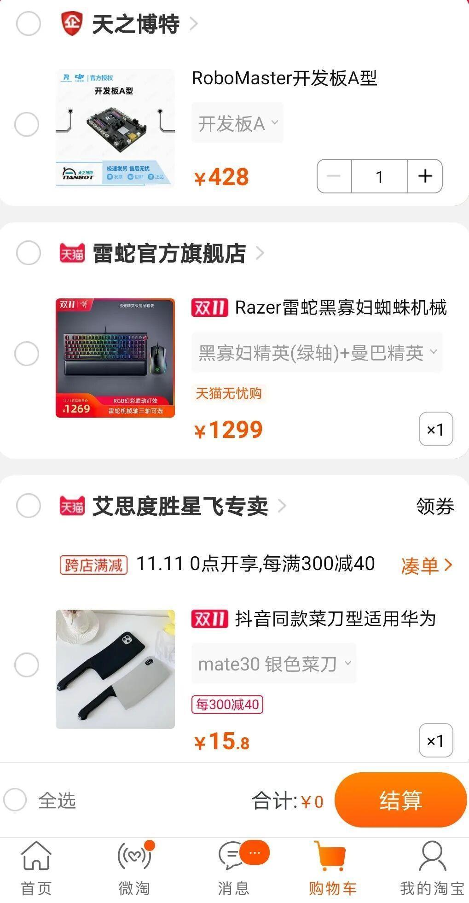
—— 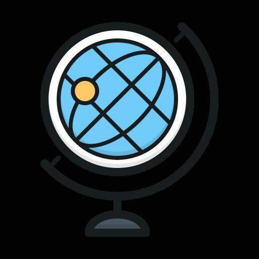
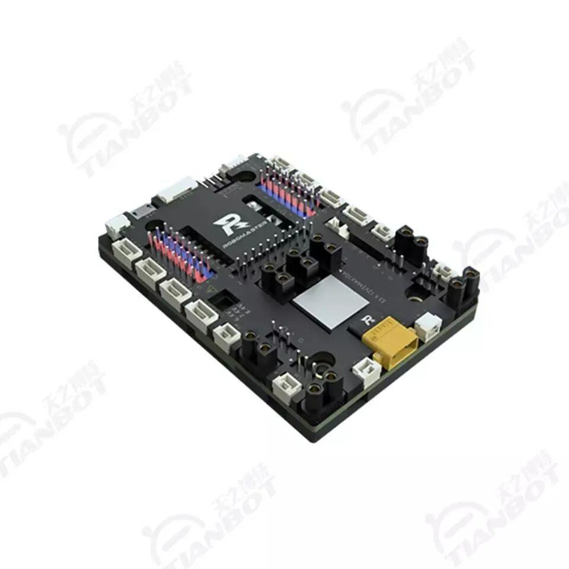
RoboMaster开发板
自己焊板子已经没有任何难度了，想试试官方的到底好不好使，花钱解锁更多乐趣。
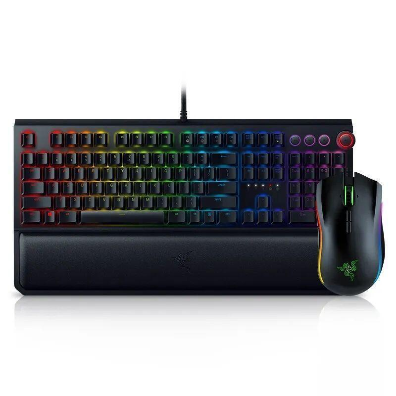
雷蛇机械键盘
当被质问代码进度为什么又delay时，优秀的coder会通过雷蛇清脆的键盘声告诉众人:我真的有在努力debug!
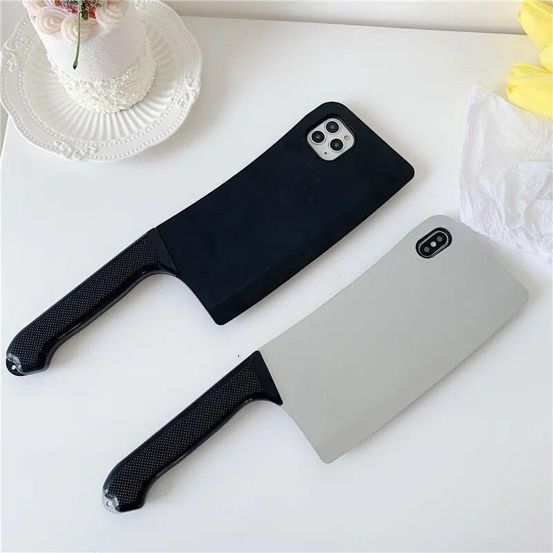
仿真菜刀手机壳
当产品对你说，老子又想出了一个绝妙的idea时，就把手机壳亮出来吧，产品见了不敢提需求编译器见了不敢报错。
运营的淘宝购物车
——  解读——
解读——
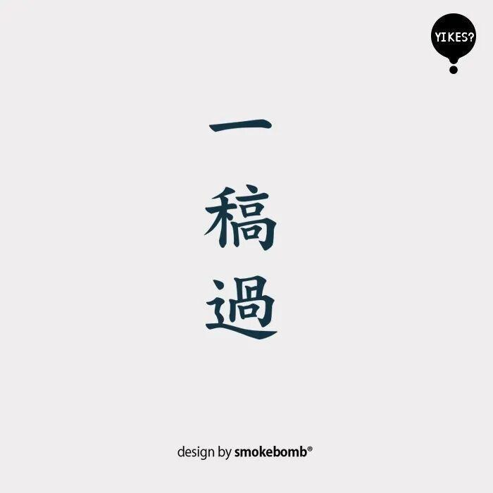
一稿过纹身贴
运营人最大的愿望大概就是一稿过了！一稿一稿地改真的很死亡~
超耐磨运动跑鞋
作为一名合格的万金油，当然要穿最舒适的鞋，走最难走的路。再说了，只要跑得够快，热点就追不上我。
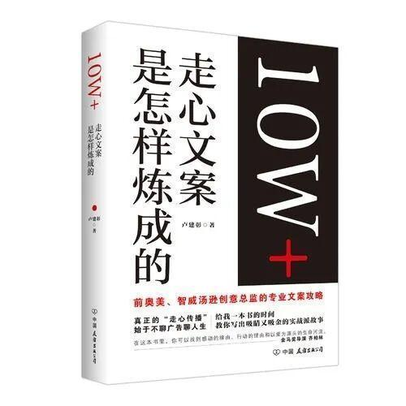
《10W+爆款文案》
运营小编的葵花宝典、桌面锦鲤。每日抚摸封皮3遍，坚持数月即可求得十万加，心诚则灵。
RM人的购物车果然是别具一格！当然，别看他们拧螺丝、写代码的时候一丝不苟，但还是会有不少小伙伴们被淘宝的一系列规则搞得头昏脑涨，一时冲动下了单然后才追悔莫及。那么，请在下单之前跟着小编一起念：
量入为出，适度消费；
避免盲从，理性消费；
保护环境，绿色消费；
勤俭节约，艰苦奋斗；
不说了，小编要去把这段话抄一百遍！
图片|微 博
排版|辛学敏
文字|辛学敏
关注我们，了解更多资讯哦~